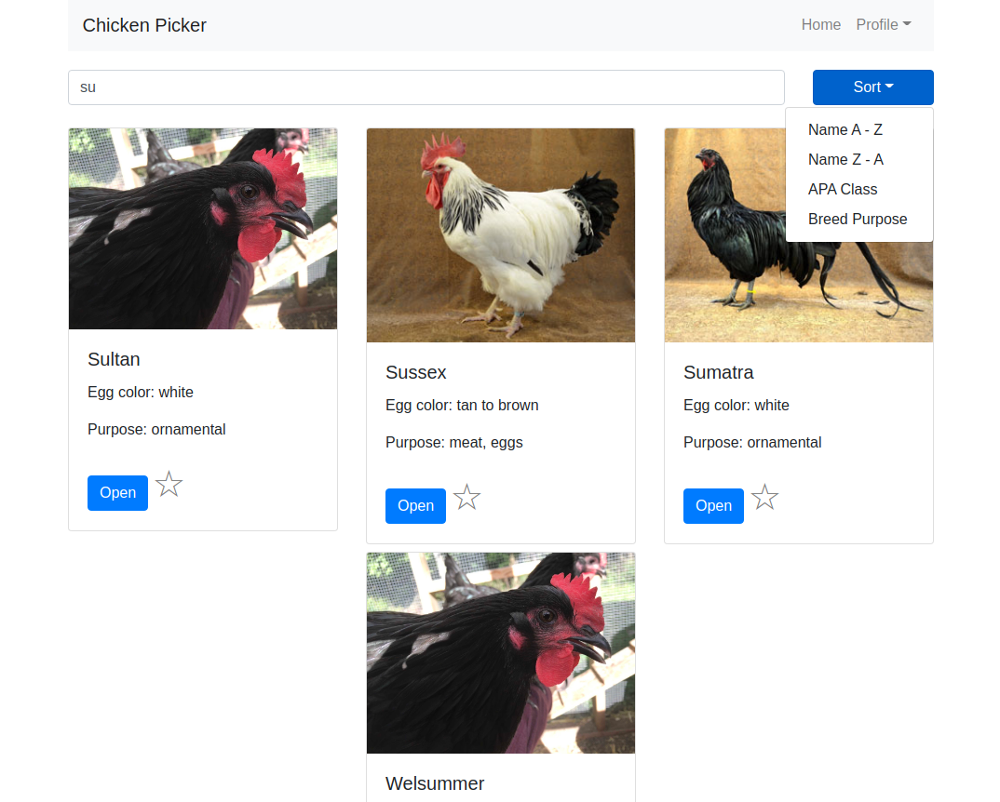
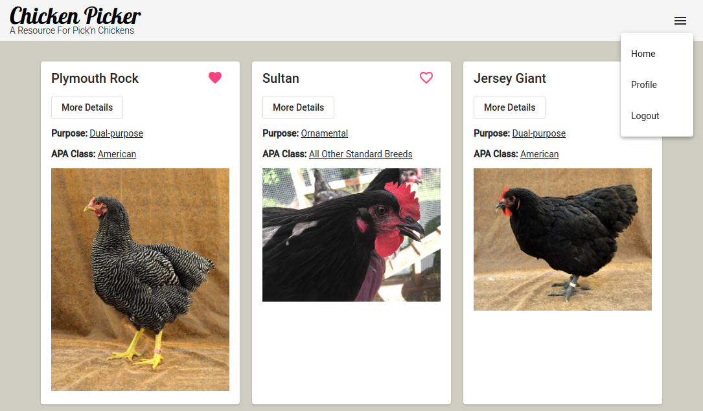
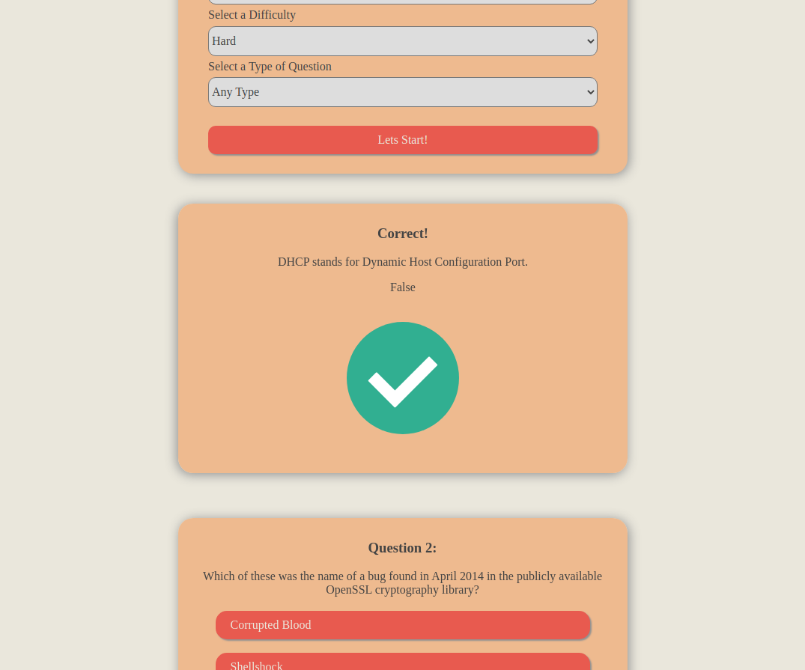
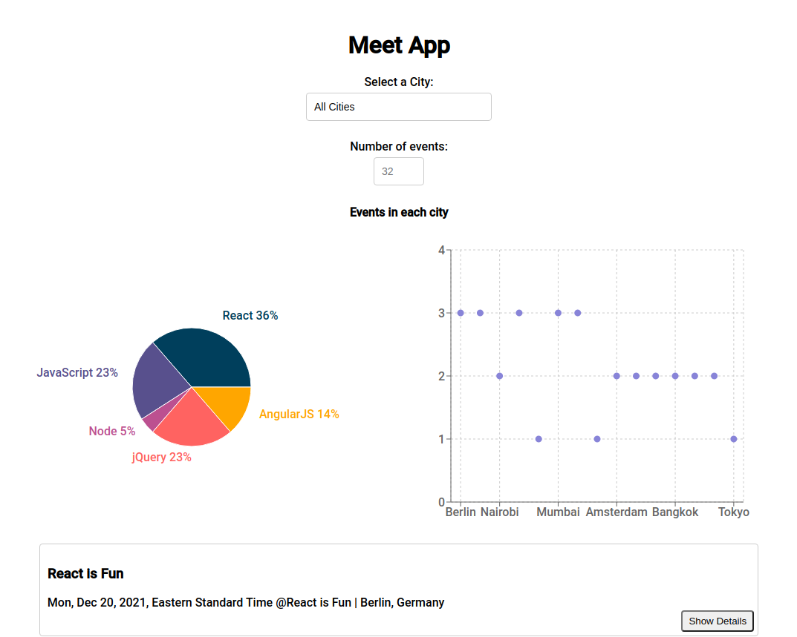

My Work
Chicken Picker React Client
An App for viewing information on different chicken breeds to help in picking out your own backyard flock. Sort breeds by main purpose and APA class, and view more detailed information about each breed. Users can also add breeds to their favorites list and update their profile information.
Tech used: React, React-bootstrap, Redux, React-Router, Axios, Lodash, Prop-types, Sass.
See project on GitHub
Chicken Picker Angular Client
An app for viewing information about different chicken breeds to help you pick out your backyard flock. This is a slimmed down version of my Chicken Picker React client built in Angular using the same API.
Tech used: Angular, Typescript, RxJS, Typedoc, Angular Material Design.
See project on GitHubSee the live app 
Chicken Picker API
A RESTful API built in Express with a MongoDB database. The server is hosted on Heroku with the database on MongoDB Atlas. There are some query helpers, methods, and statics on the models to help with DB queries, initial login authentication, and JWTs for authorization.
Tech Used: Express.js, Mongoose, MongoDB, Passport, Bcrypt, Morgan, Jsonwebtoken, Jsdoc.
See API on GitHubSee project on GitHub
Trivia App
A fun app for playing trivia. The app uses vanilla JS, HTML, and CSS to pull trivia questions from the Open Trivia DB and display them as a list of cards that flip over to reveal the correct answer. Users can choose the category, difficulty, type, and number of questions they would like to answer. I would like to add a DB to this App to allow users to login and keep track of their scores and host a scoreboard of all users.
In building this app I learned DOM manipulation, IIFEs, promises, AJAX, polyfills, CSS animations, modals, and Bootstrap.
See project on GitHubSee the live app 
Meet App
An Progressive Web App with offline capabilities for viewing meet-ups pulled from the Google Calendar API. The App allows users to filter by city and number of events and also displays a chart of meetings by subject and a graph of meetings by city. Meet App was created with Create React App and has a 100% testing coverage with unit, integration, acceptance, and end-to-end tests. Jest is used as a testing framework with Enzyme, Cucumber, and Puppeteer integrations. Serverless functions hosted on AWS Lambda are used for authenticating the users Google account.
In building this app I learned about serverless functions, OAuth, CRA, TDD and BDD, Gherkin, PWAs, OOP class inheritance, and performance monitoring.
See project on GitHubSee the live app 
Chat App
A React Native chat messaging app with real time data using webSockets with Firebase. The app features the ability to take photos from the app, send photos from the users library, and send the users current location.
Tech used: React Native, Gifted Chat, AsyncStorage, Firebase, Netinfo, Expo, Android SDK.
See project on GitHub
Chicken Coop Data Logger
An Arduino project to log the temperature and humidity inside and outside my chicken coop. It is solar powered and POSTs the data to a simple PHP script and MySQL database on a home server. The script will also send the data to Thingspeak and can be configured to send me a text message if the door to the coop is unlocked at a specified time.
I designed, assembled, and soldered the circuits together myself. Power managment and requirments were my biggest hurdle for this project. I did not have a multimeter sensitive enough to read the current draw well enough so I had to use a bunch of math and guesstimates to make sure I had enough power for this to run indefinitely.
Tech used: PHP, C++/Arduino, MySQL, ESP8266, DHT22 sensors, solar charging system, various electronic parts.
See project on GitHubSee the live data on Thingspeak
Minute To Win It game timer
This is a simple Arduino based timer with a buzzer and LCD screen for timing Minute To Win It style games. It was created for my wife and sister in law to use during their summer day camps with kids.
See project on GitHub